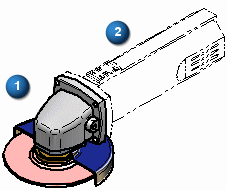

Reference parts
Sometimes you want parts or subassemblies to be included in a drawing, but only for reference purposes. Reference parts typically provide a frame of reference for the components in the drawing view to a higher level assembly or to a completed product.
When creating a drawing of the head subassembly (1) for a grinder, you may want to display the case and switch (2) as reference parts to illustrate the relationship between the head subassembly and the completed product.

Designating parts as reference parts
You can designate a part as a reference part in a drawing or in an assembly.
-
In an assembly, you can use the Occurrence Properties command to specify that an assembly occurrence is a reference part.
-
When you create a drawing view of the assembly, you can show the reference parts that were identified in the assembly, or you can assign reference parts using the Display tab in the Drawing View Properties dialog box.
To learn how to designate a reference part using the drawing view properties, see Make a part a reference part.
Setting transparency for reference parts
You can specify that reference parts are displayed as transparent or opaque parts in drawing views. You can set transparency at the document level, and locally, by editing the properties of a drawing view.
To learn how to set transparency, see Make a part a reference part.
Reference parts and parts lists
When creating a parts list of an assembly, you can use the Exclude parts marked as reference in all drawing views option, which is located on the List Control tab in the Parts List Properties dialog box, to control whether reference parts are included in a parts list.
How do I
Create assembly part views with the View WizardCreate a simplified assembly drawing view and parts list
Create an alternate position assembly drawing view
Make a part a reference part
Display construction and reference geometry in a drawing view
Learn more
Assembly drawingsLook up more details
Occurrence Properties commandSet Primary and Alternate Positions dialog box
Display tab (Drawing View Properties dialog box)
List Control tab (Parts List Properties dialog box)